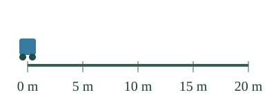
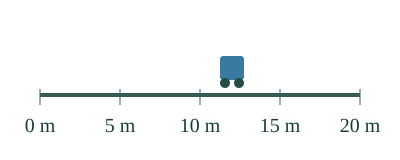

<link rel="stylesheet" href="lesson.css">
<section data-distance-lesson>


<section data-teaching-step="1" data-lesson-role="teaching-step" data-audience-coupled>
<div class="distance-intro"><div><h2>Kuinka pitkälle? Kuinka kauan?</h2><p>Loikka mittaa vaunun matkan. Aava ottaa ajan. Seuraa molempia.</p></div></div>
<div data-lesson-context-source="workbench">
<button type="button" data-distance-play>Toista</button><button type="button" data-distance-stop>Pysäytä</button>
<details data-lesson-role="teaching-step"><summary>Askel ja alkuun</summary><button type="button" data-distance-step>1 s eteenpäin</button><button type="button" data-distance-rewind>Alkuun</button><label>Vaihda mittausta<select data-distance-model><option value="jump">12 metrin kulku</option><option value="walk">Lyhyempi matka, pidempi aika</option><option value="back">Takaisin lähtöön</option><option value="offset">Mittarit eivät ala nollasta</option></select></label></details>


<div data-distance-image id="mallin-ohjaus"></div><p data-distance-readout aria-live="polite">Kuljettu matka 0 m. Kesto 0 s.</p><p data-distance-observation>Seuraa matkaa ja kelloa yhtä aikaa.</p>
</div>
</section>


<nav aria-label="Oppitunnin kohdat" data-lesson-role="metadata"><a href="#matka-miksi">Mitä mitataan?</a> · <a href="#matka-kokeile">Uusi mittaus</a> · <a href="#matka-lopuksi">Lopuksi</a></nav>


<section id="matka-miksi">


<section data-teaching-step="3" data-lesson-role="teaching-step">
<h3>Matka ja aika ovat eri suureita</h3><p><strong>Matka</strong> kertoo kuljetun reitin pituuden. Sen merkki on usein <strong>s</strong>, yksikkö tässä metri <strong>m</strong>. <strong>Aika</strong> kertoo kulun keston. Sen merkki on usein <strong>t</strong>, yksikkö tässä sekunti <strong>s</strong>. Sama kirjain s voi siis olla matkan suuretunnus tai sekunnin yksikkötunnus: katso asiayhteys.</p><p>Ensimmäisessä mittauksessa vaunu kulkee 12 m ja siihen kuluu 4 s. Mittanauha ja sekuntikello eivät mittaa samaa asiaa. Toisto näyttää mallia suunnilleen tavallisella nopeudella; askel siirtää yhden mallisekunnin ilman odottamista.</p><figure data-lesson-role="worked-example"></figure>
</section>


<section data-teaching-step="4" data-lesson-role="teaching-step">
<p data-lesson-role="question"><strong>Ennusta:</strong> tarkoittaako pidempi aika aina pidempää matkaa?</p>
</section>


<section data-teaching-step="5" data-lesson-role="teaching-step">
<details data-lesson-role="teaching-step"><summary>Vertaile kahta kulkua</summary><p>Valitse lyhyempi matka. Nyt kuljetaan 8 m ajassa 6 s. Aikaa kuluu enemmän kuin 12 metrin kulussa, vaikka matka on lyhyempi. Matkan ja ajan lukemia ei voi päätellä toisistaan ilman lisätietoa liikkeestä.</p><p>Alla oleva malli alkaa valinnasta ”Lyhyempi matka, pidempi aika”.</p>
<details data-lesson-role="worked-example" data-lesson-context="distance-walk" data-context-source="workbench" data-context-preset="walk" data-context-reveal="model"><summary>Tutki lyhyempää matkaa tässä</summary><p data-context-fallback>Malli on ilman JavaScriptiä alkuperäisessä kohdassaan: <a href="#mallin-ohjaus">avaa mallin kohta</a>.</p><div data-context-slot></div><button type="button" data-context-close hidden>Sulje malli</button></details>
</details>
</section>


<section data-teaching-step="6" data-lesson-role="teaching-step">
<h3>Paluu ei pyyhi matkaa pois</h3><p>Valitse <strong>Takaisin lähtöön</strong>. Vaunu kulkee 6 m ja palaa 6 m. Kuljettu matka on 12 m, vaikka lopun paikka on 0 m. Kesto on 6 s. Paikka ja kuljettu matka ovat eri asioita.</p><p>Alla oleva malli alkaa valinnasta ”Takaisin lähtöön”.</p>

<details data-lesson-role="worked-example" data-lesson-context="distance-back" data-context-source="workbench" data-context-preset="back" data-context-reveal="model"><summary>Tutki paluumatkaa tässä</summary><p data-context-fallback>Malli on ilman JavaScriptiä alkuperäisessä kohdassaan: <a href="#mallin-ohjaus">avaa mallin kohta</a>.</p><div data-context-slot></div><button type="button" data-context-close hidden>Sulje malli</button></details>
</section>


<section data-teaching-step="7" data-lesson-role="teaching-step">
<h3>Mittarin lukema vai kesto?</h3><p>Viimeisessä mallissa paikka muuttuu 5 metristä 17 metriin: matka 12 m. Kello näyttää alussa 10 s ja lopussa 16 s: kesto 6 s. Laske erotus. Älä kopioi loppulukemaa kuljetuksi matkaksi tai kestoksi.</p>
</section>


</section>


<section data-teaching-step="8" data-lesson-role="teaching-step">
<section id="matka-kokeile"><h3>Kirjaa uusi mittaus</h3><label>Tilanne<select data-distance-report><option value="new">Suora kulku</option><option value="return">Edestakainen kulku</option><option value="transfer">Kävely</option></select></label><p data-distance-prompt>Uusi suora kulku: alussa 2 m, lopussa 11 m; kello 1 s→6 s.</p><div class="distance-row"><label>Kuljettu matka<input data-distance-answer="distance" inputmode="decimal" aria-label="Kuljetun matkan lukuarvo"></label><label>Yksikkö<select data-distance-unit="distance"><option value="m">m</option><option value="s">s</option><option value="kg">kg</option></select></label></div><div class="distance-row"><label>Kesto<input data-distance-answer="time" inputmode="decimal" aria-label="Keston lukuarvo"></label><label>Yksikkö<select data-distance-unit="time"><option value="s">s</option><option value="m">m</option><option value="min">min</option></select></label></div><button type="button" data-distance-check>Tarkista mittaus</button><p data-distance-feedback aria-live="polite">Tarkista, kun olet valmis.</p><details data-lesson-role="hint"><summary>Tarvitsen vihjeen</summary><p>Suorassa samansuuntaisessa kulussa: loppupaikka miinus alkupaikka. Kesto: kellon loppulukema miinus alkulukema. Paluukulussa molemmat matkat kuuluvat mukaan.</p></details></section>
</section>


<section data-teaching-step="9" data-lesson-role="teaching-step">
<details data-lesson-role="teaching-step"><summary>Lisäpohdinta</summary><p>Vaunu lähtee nollasta, käy 6 metrissä ja palaa. Milloin se on samassa paikassa mutta kuljettu matka on eri? Pysäytä toisto ja vertaa meno- ja paluuvaihetta. Näytön leveys ei muuta radan metrejä.</p></details>
<p>Tutki alla paluumallia ja pysäytä se haluamaasi hetkeen.</p>
<details data-lesson-role="worked-example" data-lesson-context="distance-compare" data-context-source="workbench" data-context-preset="back" data-context-reveal="model"><summary>Vertaa meno- ja paluuvaihetta</summary><p data-context-fallback>Malli on ilman JavaScriptiä alkuperäisessä kohdassaan: <a href="#mallin-ohjaus">avaa mallin kohta</a>.</p><div data-context-slot></div><button type="button" data-context-close hidden>Sulje malli</button></details>
</section>


<details data-lesson-role="teacher-note"><summary>Opettajalle ja ilman ruutua</summary><p>Vuosiluokat 7–9. Vaaditut PHY79-QTY-01 ja PHY79-MOTION-REF säilyvät. Tässä erotetaan liikkeen matka ja kesto sekä niiden välineet/yksiköt; nopeuden kaavaa tai itse tehdyn mittauksen hallintaa ei arvioida. Erotuksen laskeminen mallinnetaan, sitä ei lisätä uudeksi graafin portiksi. Kuljettu reitti mitataan valitusta alusta loppuun; myöhempi odotus ei kuulu juuri tämän kulun kestoon. Sisäisiä odotusjaksoja sisältävää matkaa ei mallinneta tässä.</p><p>Toisto käy 10 malliaskelta sekunnissa; jokainen askel 0,1 mallisekuntia. Ajastus ei ole kalibroitu väline. Liike, rata ja mittarit johdetaan samasta rajatusta tilasta. Kokeilkaa oikealla mittanauhalla ja kellolla aikuisen kanssa: merkitse alku/loppu ja sovi mittausjakso. Tämän ruudun harjoitus ei todenna välineenkäsittelyä, itsenäistä hallintaa tai säilyvää osaamista. Se ei kirjoita henkilökohtaista näyttöhistoriaa.</p></details>


<section data-teaching-step="10" data-lesson-role="teaching-step">
<p id="matka-lopuksi" data-lesson-role="question"><strong>Lopuksi:</strong> miksi 12 m ja 4 s tarvitaan molemmat, kun kuvaillaan vaunun kulkua?</p>
</section>


<noscript data-lesson-role="metadata"><p>Ilman JavaScriptiä lue mallin matka ja kesto tekstistä ja kuvasta. Toteuta kaksi eri kulkua oikeilla välineillä. Liikkuva malli ja palautetarkistus tarvitsevat JavaScriptin.</p></noscript>
</section>
